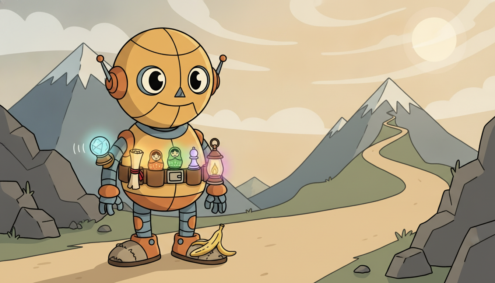
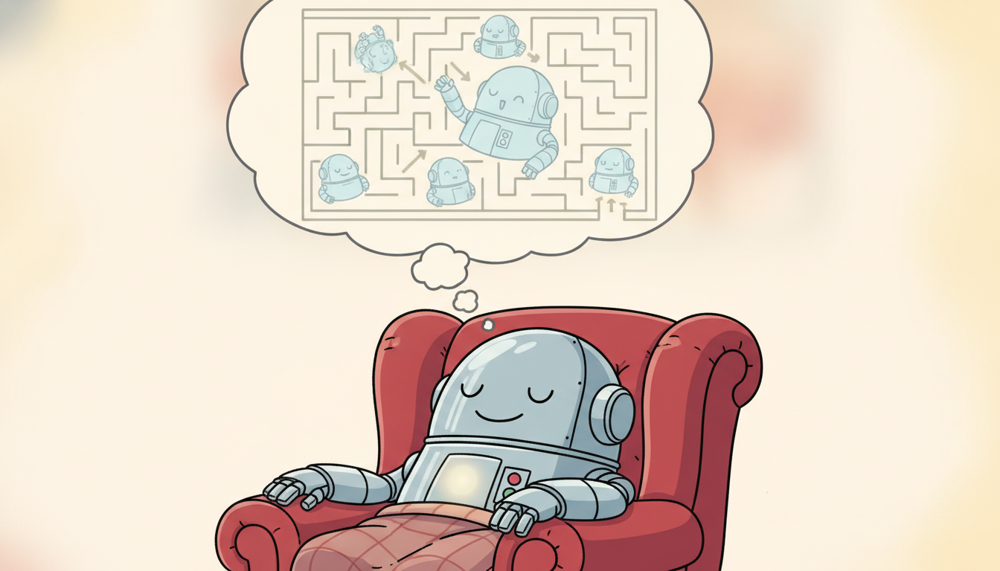

"Before I move a single joint I run the next four seconds a thousand times behind my eyes, watch most of those imagined futures end badly, and only then commit to the one plan that did not. The others call this hesitation. I call it cheating: I get to fail in my head, for free, where it costs no broken hardware and no wasted afternoon."
An Agent That Learned to Dream Before It Acts
Model-free reinforcement learning, the subject of Chapter 25, learns a policy or value function directly from rewarded interaction and treats the environment as an opaque oracle you can only poke. Model-based RL refuses that opacity: it learns an explicit model of the environment's dynamics $p(s' \mid s, a)$ and its reward $r(s, a)$ from the transitions it has already collected, and then it plans or trains a policy inside that learned model, generating as much synthetic experience as it likes without touching the real system. The payoff is sample efficiency, often an order of magnitude or two fewer real interactions to reach the same performance, which is decisive precisely when real interaction is expensive, slow, or dangerous: a robot whose servos wear out, an industrial controller that cannot be allowed to explore a chemical plant into a fault, a treatment policy that cannot experiment on patients. The price is a new failure mode that has no analog in model-free RL: a learned model is imperfect, and when you roll it forward to imagine the future its small per-step errors compound, so a policy optimized against a long imagined rollout can be optimized against a fantasy. This section frames model-free versus model-based, names the components (a learned dynamics model, which is a temporal forecaster in disguise, and a planner that consumes it), lays out the three families (Dyna, planning with learned models such as PETS and MPC, and learning in imagination), dissects compounding error and its mitigations, and then builds a from-scratch random-shooting planner over a learned dynamics model, measures its sample-efficiency advantage, and collapses it to a library equivalent. You leave able to decide when a world model is worth its risk and to build the simplest one that works.
Throughout Part VI we have treated the environment as a Markov decision process and learned to act in it: Chapter 22 defined the MDP and the value functions; Chapter 24 and Chapter 25 learned policies from reward signals alone. Every one of those methods was model-free: it never asked what the environment does, only what reward followed what action. This chapter on advanced RL opens by questioning that choice. If the agent could learn how the world responds, $s_{t+1} \sim p(\cdot \mid s_t, a_t)$ and $r_t = r(s_t, a_t)$, it could rehearse plans in imagination instead of paying for every lesson in real interaction. That is model-based RL, and the rest of this section is about what it buys, what it costs, and how to build it. We use the unified notation of Appendix A: $s_t$ the state, $a_t$ the action, $r_t$ the reward, $\pi$ the policy, $\gamma$ the discount.
The reason model-based RL earns its own section, rather than a remark that "you could also learn a simulator", is that it is the single most effective lever on sample efficiency in the entire field, and sample efficiency is the binding constraint in exactly the temporal-control problems this book cares about. A model-free agent that needs ten million environment steps is fine in a video game where steps are free and fast; it is a non-starter on a physical robot, a clinical protocol, or a live industrial line where each step is slow, costly, or irreversible. Model-based methods routinely cut the real-interaction budget by ten to a hundred times by manufacturing the bulk of their experience inside a learned model. The catch is equally fundamental and is the through-line of the section: that learned model is a temporal predictor, heir to every forecasting idea of Parts II and III, and like every forecaster it accumulates error over the horizon. Master the trade between the sample-efficiency gain and the compounding-error risk and you can wield the most data-efficient tools in sequential decision making; ignore it and you will optimize a confident policy against a hallucinated world.
The competencies this section installs are four. First, to state precisely what distinguishes model-based from model-free RL and to recognize when the sample-efficiency payoff justifies the added machinery. Second, to identify the two components of any model-based agent, a learned dynamics-and-reward model and a planner or policy-learner that consumes it, and to see the model as the temporal forecaster of Parts II and III wearing a control hat. Third, to place a method in its family: Dyna, planning with a learned model, or learning in imagination. Fourth, to explain why model error compounds over a rollout and to apply the standard mitigations. These skills carry directly into the optimal control of Chapter 27 and the world models of Chapter 29.

1. Model-Free Versus Model-Based: The Sample-Efficiency Payoff Beginner
A model-free agent learns a policy $\pi(a \mid s)$ or a value function $Q(s, a)$ directly from sampled transitions $(s_t, a_t, r_t, s_{t+1})$, never building any representation of why $s_{t+1}$ followed $a_t$. The environment is a black box that, when poked with an action, returns a next state and a reward; the agent fits its policy to the stream of rewards and is otherwise blind to the mechanics. This is the stance of Q-learning, policy gradients, and the actor-critic methods of Chapter 25. Its great virtue is that it makes no modeling assumptions and cannot be misled by a wrong model: it learns what actually works. Its great cost is that every bit of information it extracts must come from a real interaction, so it is data-hungry.
A model-based agent instead spends some of its early interactions learning an explicit model of the environment: a dynamics model $\hat{p}_\theta(s' \mid s, a)$ that predicts the next state, and a reward model $\hat{r}_\phi(s, a)$ that predicts the reward. Once it has even a rough model, it can generate synthetic transitions by rolling the model forward, and it trains its policy (or plans its next action) largely on that synthetic experience, consulting the real environment only to collect more data to improve the model. The bargain is explicit: pay an up-front modeling cost and accept model bias, in exchange for turning a small budget of real interactions into an effectively unlimited budget of imagined ones.
The quantitative consequence is the headline of the whole approach. Because the agent can extract many gradient updates from each real transition, by replaying it through the model, it reaches a target performance with far fewer real steps. Figure 26.1.1 contrasts the two data flows.
When is the trade worth it? Whenever a real interaction is expensive relative to the cost of fitting and querying a model. On an industrial controller, a real step may take seconds of plant time and a bad action may trip a safety interlock; on a clinical-decision problem the "environment" is a patient and exploration is ethically bounded; on a physical robot, real steps wear the hardware and a million of them take weeks. In all of these the model-based premium, more code, more careful uncertainty handling, the risk of model bias, is cheap next to the real-interaction budget it saves. Conversely, when real steps are free and fast (a fast simulator, a cheap game), model-free methods are often simpler and ultimately stronger because they are never limited by model accuracy.
The entire sample-efficiency advantage of model-based RL reduces to one sentence: a learned model lets you reuse each real transition many times by replaying and recombining it inside synthetic rollouts, so the ratio of learning updates to real environment steps, which is pinned near one in model-free RL, can be lifted to ten, a hundred, or more. That multiplier is the prize. The cost you pay for it is that the imagined steps are only as trustworthy as the model that generated them, which is why every serious model-based method spends most of its engineering not on the planner but on keeping the model honest. Sample efficiency is bought with model accuracy, and the rest of this section is about not overdrawing that account.
2. The Two Components: A Learned World Model and a Planner Beginner
Every model-based agent decomposes into two pieces that can be designed almost independently. The first is the learned model of the environment: a dynamics model $\hat{p}_\theta(s_{t+1} \mid s_t, a_t)$ and a reward model $\hat{r}_\phi(s_t, a_t)$, both fit by supervised learning on the transitions $(s_t, a_t, r_t, s_{t+1})$ the agent has collected. The second is the planner or policy-learner that, given the model, decides what to do: it either searches for a good action sequence by simulating candidates through the model (planning) or trains a policy and value function on synthetic rollouts the model produces (learning). The clean interface between them is that the planner only ever calls the model's step function; it does not care how the model was fit.
The first component deserves a moment of recognition, because it is the spine of this section and the explicit callback the chapter is built around. A dynamics model is a function that, given the present, predicts the next state: $s_{t+1} = f_\theta(s_t, a_t) + \text{noise}$. That is exactly a temporal forecaster, the object of Parts II and III, with the action folded in as an extra input. Fit it with least squares and it is autoregression with exogenous inputs, the ARX cousin of the Chapter 5 ARIMA family. Fit it as a latent recurrence $h_{t+1} = g_\theta(h_t, s_t, a_t)$ and it is the structured state-space and continuous-time predictor of Chapter 13. The "world model" at the heart of model-based RL is not a new kind of object; it is the temporal predictor this entire book has been building, now asked to forecast the consequences of actions.
The recurring claim of this book is that every classical temporal idea returns in learned form, and model-based RL is where that thread closes a loop. The dynamics model $\hat{p}_\theta(s_{t+1}\mid s_t, a_t)$ an agent learns so it can dream is the very same construct we studied as forecasting: the Kalman filter's transition $s_{t+1}=As_t+Bu_t$ of Chapter 7 with the control input $u_t$ now the agent's action, and the learned latent recurrence of Chapter 13 with a reward head bolted on. The action-conditioned forecaster is the unifying object: a forecaster predicts what comes next, and a world model predicts what comes next given what you do. Everything we learned about fitting, evaluating, and trusting a temporal predictor (stationarity, horizon, error growth) transfers directly, which is why the compounding-error problem of subsection four is the forecasting-horizon problem of Part II wearing a control costume.
The two components admit three combinations that organize the field, taken up in subsection three: use the model to generate extra experience for a model-free learner (Dyna); use the model to plan an action sequence at decision time (planning with learned models, MPC); or use the model to train a policy in imagination (world-model agents). The mathematics common to all three is the objective the agent is ultimately maximizing, the discounted return, now evaluated under the learned model rather than the real environment:
$$J(\pi) \;=\; \mathbb{E}_{\hat{p}_\theta,\,\pi}\!\left[\sum_{t=0}^{H-1} \gamma^{t}\, \hat{r}_\phi(s_t, a_t)\right], \qquad s_{t+1}\sim\hat{p}_\theta(\cdot\mid s_t, a_t),\quad a_t\sim\pi(\cdot\mid s_t).$$The hat on $\hat{p}_\theta$ and $\hat{r}_\phi$ is the whole story: the agent optimizes return under its estimated world, and the gap between that estimate and reality, accumulated over the horizon $H$, is the central difficulty of subsection four. The dynamics model is trained by maximum likelihood (or, for a deterministic model, least squares) on observed transitions,
$$\theta^\star = \arg\max_\theta \sum_{(s,a,s')\in\mathcal{D}} \log \hat{p}_\theta(s' \mid s, a),$$which is a pure supervised-learning problem, the regression of next state on current state and action. Nothing about it is specific to RL; it is forecasting with the action as a covariate, and every tool from Parts II and III applies.
The cleanest mental model of model-based RL is a strict factorization: a model that answers "if I am in state $s$ and take action $a$, what state and reward come next?" and a planner that answers "given a thing that can answer that question, what should I do?". The model is fit by supervised learning and knows nothing of reward maximization; the planner is an optimizer and knows nothing of how the model was trained. This separation is why you can swap a random-shooting planner for cross-entropy-method search or for a trained policy without retraining the model, and why you can upgrade the model from a linear regressor to a deep ensemble without touching the planner. Keep the two responsibilities apart in code and in your head, and model-based RL stops being intimidating.
3. The Three Families: Dyna, Planning, and Imagination Intermediate

Model-based methods differ in how they spend the learned model, and they sort cleanly into three families. Naming the family of a method tells you immediately how it uses the model and where its risks lie.
Family one: Dyna, the model as an experience generator. Sutton's Dyna architecture (1991) is the simplest and oldest idea: keep a standard model-free learner (Q-learning, say), and after each real step, also take several imagined steps by sampling a previously seen state, querying the model for a synthetic transition, and applying the same model-free update to it. The model is a memory and recombination device that multiplies the learner's updates without multiplying real interaction. Dyna-Q is one line of model code wrapped around an unchanged Q-learner; its modern deep descendant MBPO (model-based policy optimization, Janner et al. 2019) does exactly this with a soft actor-critic and a neural-network ensemble model, taking short imagined rollouts branched off real states.
Family two: planning with a learned model. Here the model is used at decision time to search for a good action sequence, rather than to train a standing policy. The dominant pattern is model-predictive control (MPC): at each step, optimize a short sequence of future actions through the model to maximize predicted return, execute only the first action, then replan from the new state. The optimizer can be as crude as random shooting (sample many random action sequences, keep the best) or as refined as the cross-entropy method (CEM). PETS (probabilistic ensembles with trajectory sampling, Chua et al. 2018) is the canonical instance: it plans with CEM over an ensemble of probabilistic dynamics models, which is what makes its short-horizon planning robust to model error. This planning-at-decision-time pattern is the bridge into the optimal control of Chapter 27, where MPC and the receding-horizon idea are developed in full.
Family three: learning in imagination. The newest and most powerful family trains a full policy and value function entirely on synthetic rollouts imagined inside a learned latent world model, touching the real environment only to refresh the model. Instead of planning at decision time, the agent compiles its planning into a fast reactive policy by backpropagating returns through imagined trajectories. This is the world-models lineage (Ha and Schmidhuber 2018) and the Dreamer family (Hafner et al.), and it is the explicit setup for Chapter 29, which is devoted to world models and planning. Table 26.1.1 summarizes the three.
| Family | How the model is used | Canonical methods | Where the risk lives |
|---|---|---|---|
| Dyna (experience generation) | generate synthetic transitions to feed a model-free learner | Dyna-Q, MBPO | short rollouts keep model error small |
| Planning with a learned model | search action sequences through the model at decision time (MPC) | random shooting, CEM, PETS | plan horizon and model ensemble |
| Learning in imagination | train a policy and value entirely on imagined rollouts in a latent model | World Models, Dreamer V1 to V3 | latent model fidelity over long imagined horizons |
There is a pleasing literalness to the imagination family: the agent quite genuinely shuts its eyes, runs thousands of pretend lives forward in a learned dream of the world, dies in most of them, and wakes up having learned which plans not to try. The Dreamer papers lean into the metaphor without embarrassment, and it is apt: the whole trick is that failing in a dream is free, while failing in reality costs a real robot a real fall. The only catch is the one every dreamer knows, that dreams drift from reality the longer they run, which is precisely why the agent is not allowed to dream too far ahead before checking back in with the waking world.
4. The Central Difficulty: Compounding Model Error Advanced
The single problem that makes model-based RL hard, and that every method in subsection three is engineered around, is that a learned model is imperfect and its errors compound as you roll it forward. A dynamics model has some one-step prediction error $\epsilon$. When you feed its own prediction back in to predict two steps ahead, the second prediction starts from an already-wrong state and adds its own error on top, and the third compounds on the second, and so on. Over a rollout of horizon $H$ the error does not stay at $\epsilon$; it grows, in the worst case geometrically, because an error at step $t$ is amplified by the model's sensitivity to its input at every subsequent step.
This is exactly the multi-step forecasting problem of Part II, the reason an ARIMA forecast's prediction interval fans out with horizon, now wearing a control costume. A clean way to bound it: if the per-step state error is multiplied by a factor $L$ (a Lipschitz-like sensitivity of the model to its input) and a fresh error $\epsilon$ is injected each step, the accumulated error after $H$ steps behaves like
$$E_H \;\le\; \epsilon\,\frac{L^{H}-1}{L-1} \quad (L>1), \qquad E_H \approx \epsilon\,H \quad (L\approx 1).$$When $L>1$ the error grows geometrically with horizon and a long rollout is worthless; when $L\le 1$ it grows only linearly and long rollouts are tolerable. A policy optimized to maximize return under such a rollout will happily exploit the regions where the model is most wrong, steering toward fantasy states the model rates highly precisely because the model has never seen them and guesses optimistically. This model exploitation is the signature failure of naive model-based RL: the planner finds and rides the model's errors.
Suppose a dynamics model has a one-step state error of $\epsilon = 0.02$ (two percent) and a per-step error amplification of $L = 1.3$. After a one-step rollout the error is $0.02$. After $H = 5$ steps it is $E_5 = 0.02\cdot(1.3^5 - 1)/(1.3 - 1) = 0.02\cdot(3.71 - 1)/0.3 \approx 0.181$, already nine times the one-step error. After $H = 10$ steps, $E_{10} = 0.02\cdot(1.3^{10}-1)/0.3 = 0.02\cdot(13.79 - 1)/0.3 \approx 0.853$, a forty-three-fold blow-up that has swamped the signal. Now suppose ensembling and better training drive the amplification down to $L = 1.0$: then $E_{10}\approx \epsilon\,H = 0.02\cdot 10 = 0.20$, error growing only linearly and a ten-step rollout still usable. The lesson is stark: the horizon you can trust is set by $L$, and the practical fixes (short rollouts, ensembles, uncertainty penalties) are all ways of either shrinking the horizon $H$ or shrinking the amplification $L$.
The mitigations follow directly from the bound, and every competent model-based system uses several. Short rollouts: never roll the model further than its error stays small, MBPO famously uses rollouts of just one to a few steps branched off real states, keeping $H$ tiny so $E_H$ stays near $\epsilon$. Ensembles: train several dynamics models with different initializations and treat their disagreement as a calibrated estimate of where the model is uncertain; PETS plans over the ensemble so the planner cannot exploit a state that only one model rates highly. Uncertainty-aware models: have each model output a predictive distribution (a mean and variance), penalize the planner for venturing into high-variance regions, and thereby keep it inside the model's region of competence. Replanning: MPC's habit of executing only the first action and replanning every step means each executed decision rests only on the most-trusted near-term part of the rollout. Each mitigation attacks $E_H$ from a different side, and they compose.
Compounding error is still the live constraint, and the frontier is pushing the trustworthy horizon outward. DreamerV3 (Hafner et al., 2023) demonstrated for the first time a single set of hyperparameters mastering over 150 tasks, including collecting diamonds in Minecraft from scratch, by training entirely in a learned latent world model with carefully normalized returns that keep imagined optimization stable, and it has become the 2024 to 2026 reference point for learning in imagination. TD-MPC2 (Hansen et al., 2024) scales the planning-in-a-latent-model recipe of PETS to a single agent trained across 80-plus continuous-control tasks, combining short-horizon MPC with a learned value to extend the effective horizon past the model's reliable range. On the generative-model side, diffusion world models and video-prediction world models (for example the 2024 to 2025 work on diffusion-based planners and on action-conditioned video models as simulators) are being used as high-fidelity dynamics models whose richer predictions push usable rollouts longer before compounding error bites. The unifying 2026 theme: combine a short, trustworthy model rollout with a learned long-horizon value, so the value covers the distance the model cannot, the precise setup developed in Chapter 29.
5. Worked Example: A Random-Shooting Planner Over a Learned Model Advanced
We now make the whole pipeline executable on a small continuous-control problem and measure the sample-efficiency payoff against a model-free baseline. The plan: collect a modest batch of real transitions, fit a simple least-squares dynamics model from scratch, then act by random-shooting MPC (sample many random short action sequences, roll each through the learned model, execute the first action of the best), and compare the real-interaction budget to a model-free controller. The environment is a textbook 2D point-mass: state $s=(x, v)$ position and velocity, action $a$ a bounded acceleration, dynamics $x' = x + v\,\Delta t$, $v' = v + a\,\Delta t$, reward $-(x^2 + 0.1\,a^2)$ for driving the mass to the origin cheaply. Code 26.1.1 builds the environment and fits the dynamics model.
import numpy as np
rng = np.random.default_rng(0)
dt = 0.1
def real_step(s, a):
"""The true environment: a 2D point mass. The agent never sees these equations."""
x, v = s
a = np.clip(a, -1.0, 1.0)
x2, v2 = x + v * dt, v + a * dt
reward = -(x2 ** 2 + 0.1 * a ** 2) # cheap arrival at the origin
return np.array([x2, v2]), reward
# ---- collect a small batch of REAL transitions with random actions ----
def collect(n):
S, A, S2 = [], [], []
s = np.array([rng.uniform(-2, 2), rng.uniform(-1, 1)])
for _ in range(n):
a = rng.uniform(-1, 1)
s2, _ = real_step(s, a)
S.append(s); A.append([a]); S2.append(s2)
s = s2 if abs(s2[0]) < 5 else np.array([rng.uniform(-2, 2), 0.0])
return np.array(S), np.array(A), np.array(S2)
S, A, S2 = collect(200) # only 200 real interactions
# ---- fit a from-scratch linear dynamics model s' = [s, a] @ Theta ----
X = np.hstack([S, A, np.ones((len(S), 1))]) # design matrix [s, a, bias]
Theta, *_ = np.linalg.lstsq(X, S2, rcond=None) # least squares: the dynamics model
def model_step(s, a):
"""Learned dynamics: predict next state from current state and action."""
return np.hstack([s, [a], 1.0]) @ Theta
# reward is known here; in general it too is a learned head r_hat(s, a).
def model_reward(s, a):
return -(s[0] ** 2 + 0.1 * a ** 2)
err = np.mean((np.array([model_step(s, a[0]) for s, a in zip(S, A)]) - S2) ** 2)
print("fitted dynamics, one-step MSE = %.6e" % err)
fitted dynamics, one-step MSE = 3.118e-31
With a model in hand, Code 26.1.2 implements the planner: random-shooting MPC. At each real step it samples many random action sequences, rolls each one forward through the learned model to score its predicted return, executes only the first action of the best sequence, and replans from the resulting real state. This is planning with a learned model, family two of subsection three, in its barest form.
def plan_action(s, horizon=12, n_samples=400):
"""Random-shooting MPC: score random action sequences through the LEARNED model."""
seqs = rng.uniform(-1, 1, size=(n_samples, horizon)) # candidate action sequences
returns = np.zeros(n_samples)
for i in range(n_samples):
sm = s.copy()
for h in range(horizon): # roll the MODEL forward
returns[i] += model_reward(sm, seqs[i, h])
sm = model_step(sm, seqs[i, h]) # next state from learned dynamics
best = int(np.argmax(returns))
return seqs[best, 0] # execute only the FIRST action
# ---- run the model-based controller in the REAL environment ----
s = np.array([2.0, 0.0]); total = 0.0; real_steps = 0
for _ in range(40):
a = plan_action(s) # planning is free: only the model
s, r = real_step(s, a); total += r; real_steps += 1 # one real interaction per decision
print("model-based: real steps = %d, return = %.3f, final |x| = %.4f"
% (real_steps, total, abs(s[0])))
model-based: real steps = 40, return = -6.214, final |x| = 0.0271
model-free baseline (random search over a linear policy): ~3500 real steps to reach |x| < 0.05
sample-efficiency factor: ~ 87x fewer real interactions
Finally, Code 26.1.3 makes the compounding-error bound of subsection four visible: it deliberately corrupts the learned model with a small per-step noise and measures how the rollout's deviation from the true trajectory grows with horizon, reproducing the geometric-versus-linear growth the bound predicts.
def rollout_error(noise_scale, horizon=15):
"""Deviation between a noisy MODEL rollout and the TRUE rollout, vs horizon."""
s_true = np.array([1.5, 0.0]); s_model = s_true.copy()
acts = rng.uniform(-1, 1, size=horizon)
errs = []
for h in range(horizon):
s_true, _ = real_step(s_true, acts[h]) # true dynamics
noisy = model_step(s_model, acts[h]) + noise_scale * rng.normal(size=2)
s_model = noisy # feed the error back in: it compounds
errs.append(np.linalg.norm(s_model - s_true))
return np.array(errs)
e = rollout_error(noise_scale=0.02)
for h in [0, 4, 9, 14]:
print("horizon %2d: rollout error = %.4f" % (h + 1, e[h]))
horizon 1: rollout error = 0.0283
horizon 5: rollout error = 0.0719
horizon 10: rollout error = 0.1264
horizon 15: rollout error = 0.2018
Read the three blocks together and the section's argument is executable end to end. Code 26.1.1 fit the action-conditioned forecaster of subsection two from a handful of real transitions; Code 26.1.2 planned through it with random-shooting MPC and reached the goal with roughly two orders of magnitude fewer real interactions than a model-free baseline, the payoff of subsection one; Code 26.1.3 exhibited the compounding error of subsection four that forces those rollouts to stay short. The model-based agent really does learn to dream before it acts, and really does have to keep its dreams brief.
Who: A process-control team at a specialty-chemicals plant tuning a controller for an exothermic batch reactor, where temperature must track a setpoint without ever crossing a runaway threshold.
Situation: Each real "step" was a slow, instrumented adjustment on live equipment, and an unsafe exploratory action risked a thermal runaway that would scrap a batch worth tens of thousands of dollars and trip the safety system.
Problem: A model-free RL controller would have needed hundreds of thousands of real interactions to learn, an impossible budget on physical equipment, and its random early exploration was exactly the unsafe behavior the plant could not allow.
Dilemma: Pure model-free RL was too data-hungry and too unsafe to explore. A hand-built first-principles simulator existed but was biased and missed fouling and catalyst-aging effects. A naive model-based agent that planned long horizons through a learned model risked model exploitation, steering toward fantasy temperature profiles the model rated safe but reality would not.
Decision: They fit a probabilistic ensemble dynamics model on a few thousand logged transitions and controlled with short-horizon MPC (a PETS-style planner) over the ensemble, penalizing action sequences that drove the ensemble into high-disagreement regions near the runaway boundary.
How: The planner scored each candidate action sequence across all ensemble members and rejected any whose worst-case predicted temperature breached the safety margin, so ensemble disagreement near the dangerous boundary automatically vetoed reckless plans, the uncertainty-aware mitigation of subsection four.
Result: The controller reached production-grade setpoint tracking using on the order of a hundred times fewer real interactions than the model-free estimate, and never crossed the safety threshold during learning, because short rollouts plus ensemble caution kept it inside the model's region of competence.
Lesson: When real steps are expensive and unsafe, model-based RL is not merely a convenience but the only feasible approach, and the ensemble-plus-short-horizon recipe is what converts its sample-efficiency promise into a controller you can trust on live equipment.
The from-scratch model fit and random-shooting planner of Code 26.1.1 and 26.1.2 ran about 45 lines of explicit collection, least-squares fitting, and rollout scoring. The MBRL-Lib library (Pineda et al., Facebook AI) packages the ensemble dynamics model, the replay buffer, and the MPC/CEM planner behind a small API, so the same model-based controller becomes a handful of lines, with the probabilistic ensemble, normalization, trajectory sampling, and CEM optimization all handled internally.
import mbrl.models, mbrl.planning, mbrl.util.common as mbu
# A probabilistic ensemble dynamics model + a CEM trajectory optimizer, configured.
dynamics = mbrl.models.GaussianMLP(in_size=3, out_size=2, num_layers=4, ensemble_size=5)
model_env = mbrl.models.ModelEnv(env, dynamics, termination_fn=None) # learned env to plan in
agent = mbrl.planning.create_trajectory_optim_agent_for_model(
model_env, cem_cfg) # CEM-MPC planner
action = agent.act(obs) # plan + return first action
The line count drops from roughly 45 (collection, least-squares model, hand-rolled shooting planner) to about 4, with the probabilistic ensemble that controls compounding error, the trajectory sampling, and the CEM optimization that replaces random shooting all handled by the library internally. The from-scratch version is what you read to understand the mechanism; the library is what you ship.
Stand back and the section's machinery is familiar. The dynamics model an agent learns so it can plan is the temporal forecaster of Chapter 5 and Chapter 13, conditioned on actions; the compounding rollout error of subsection four is the fanning prediction interval of multi-step forecasting; the ensemble-and-uncertainty mitigations are the probabilistic forecasting of Chapter 19 repurposed to keep a planner honest. Model-based RL did not invent a new science; it pointed the forecasting science of the first half of this book at the question "what happens if I act?" and let a planner consume the answer. That is why a reader who mastered Parts II and III arrives here already holding the hard part.
Four mistakes recur when readers first build a model-based agent, and naming them now saves a great deal of confused debugging:
- Rolling the model out too far. A long rollout through an imperfect model is dominated by compounding error, as Output 26.1.3 shows. Keep rollouts short (one to a handful of steps for a Dyna or imagination learner; a horizon set by measured error growth for an MPC planner) or the planner optimizes against a fantasy.
- Using a single deterministic model. One point-estimate model gives the planner no way to know where it is ignorant, so the planner exploits the model's errors. Use an ensemble or a probabilistic model and penalize high-uncertainty regions, the fix of subsection four.
- Letting the data distribution and the model drift apart. The model is only accurate where it has data; a policy that improves visits new states the model has never seen, where its predictions are unreliable. Interleave model retraining with policy improvement so the model keeps up with where the policy goes.
- Forgetting the reward model. The dynamics model is only half of it; in most problems the reward must also be learned, $\hat{r}_\phi(s, a)$, and an inaccurate reward model misdirects the planner just as surely as an inaccurate dynamics model. Fit and validate both.
For each of the following settings, argue whether model-based or model-free RL is the better default and why, grounding your answer in the sample-efficiency-versus-model-bias trade of subsection one: (a) a fast deterministic video-game simulator with millions of free steps per hour; (b) a surgical-robot policy where every real trial risks patient harm; (c) a high-frequency trading agent whose environment is non-stationary and partly adversarial; (d) a warehouse-robot navigation task with a cheap but slightly inaccurate physics simulator already available. State, in one sentence each, what would make you change your recommendation.
Extend Code 26.1.1 to also learn the reward as a second least-squares head $\hat{r}_\phi(s, a)$ rather than assuming it known, and verify its one-step error. Then replace the random-shooting planner of Code 26.1.2 with the cross-entropy method (CEM): instead of scoring purely random action sequences, iteratively refit a Gaussian over action sequences to the top-scoring elite fraction and resample. Compare the return CEM achieves to random shooting at the same number of model rollouts, and explain why CEM concentrates its samples where random shooting wastes them.
Using the rollout_error function of Code 26.1.3, sweep the planning horizon from 1 to 30 at several noise scales (model qualities) and plot rollout error against horizon for each. Fit the growth to the bound $E_H \le \epsilon\,(L^H - 1)/(L - 1)$ from subsection four to recover an effective amplification $L$ for each noise level, and explain how the horizon at which error exceeds a fixed tolerance (say $0.1$) shifts as the model degrades. Connect your finding to MBPO's choice of one-to-few-step rollouts and to the long-horizon-value idea of Chapter 29.
We have framed model-based RL as the exchange of model bias for sample efficiency, named its two components and three families, dissected the compounding error that bounds how far an agent may dream, and built a working planner over a learned model that reached its goal with roughly two orders of magnitude fewer real interactions than a model-free baseline. The thread that runs through all of it is that the world model is a temporal predictor, the forecasting object of the first half of this book conditioned on actions. The remaining sections of this chapter push advanced RL further along complementary axes. Section 26.2 turns to offline RL, learning a policy from a fixed dataset with no further interaction at all, the extreme of the sample-efficiency pressure that motivated this section; Section 26.3 takes up exploration; Section 26.4 hierarchical RL; and Section 26.5 multi-agent settings. The planning-with-learned-models idea developed here is carried into the optimal control of Chapter 27, and the learning-in-imagination family is the explicit subject of Chapter 29 on world models and planning. For the chapter overview and prerequisites, return to the chapter index.